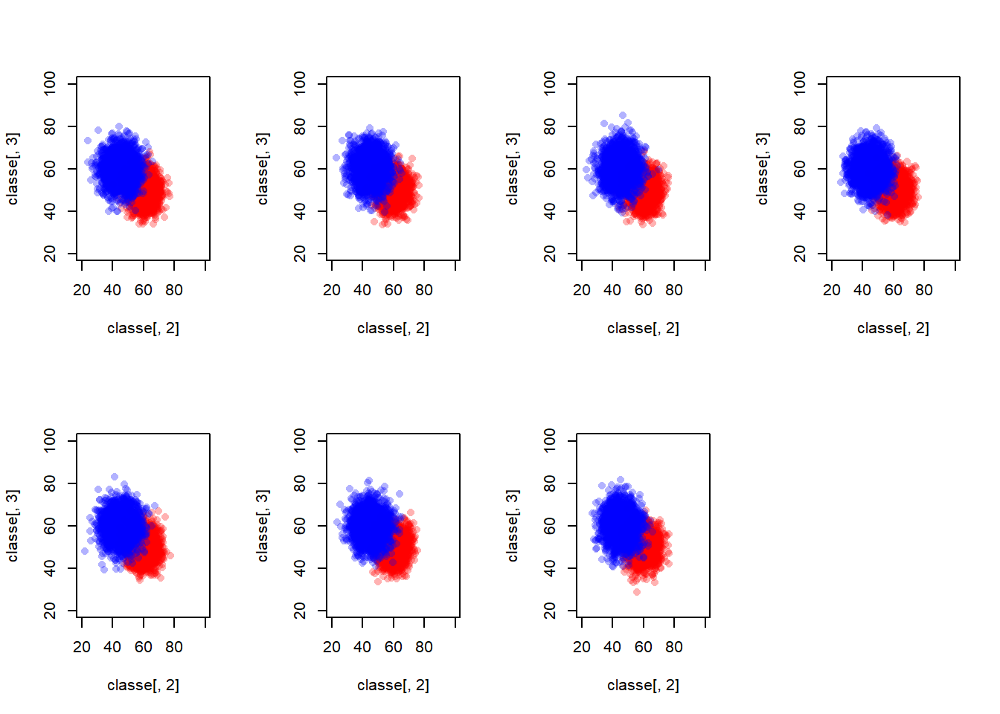
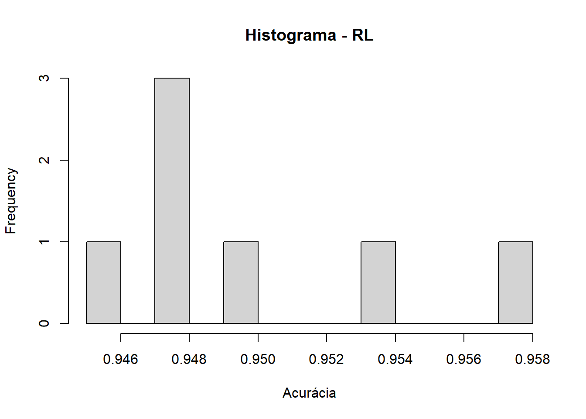
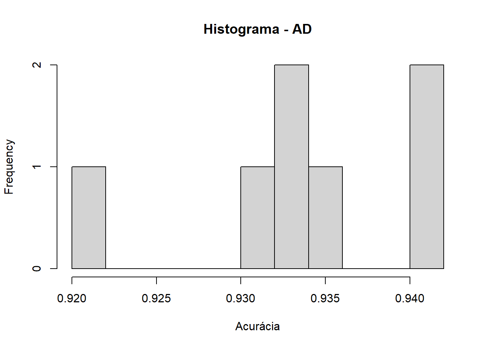
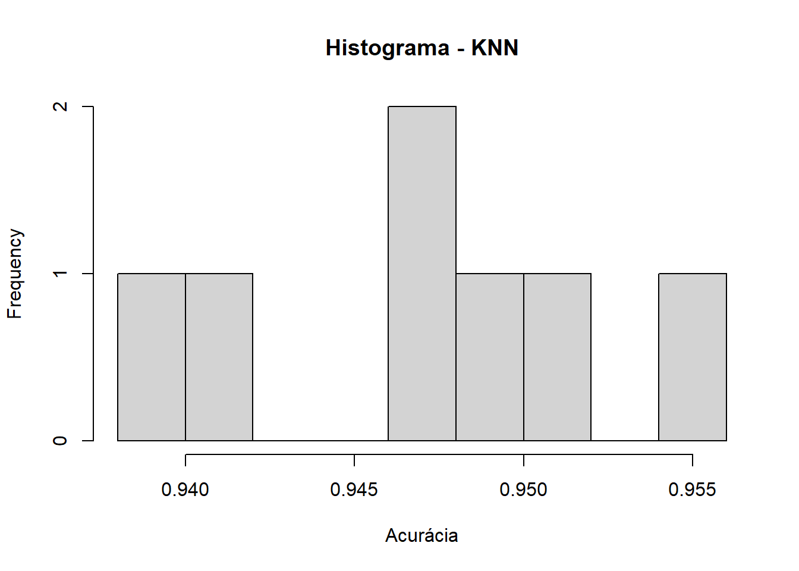
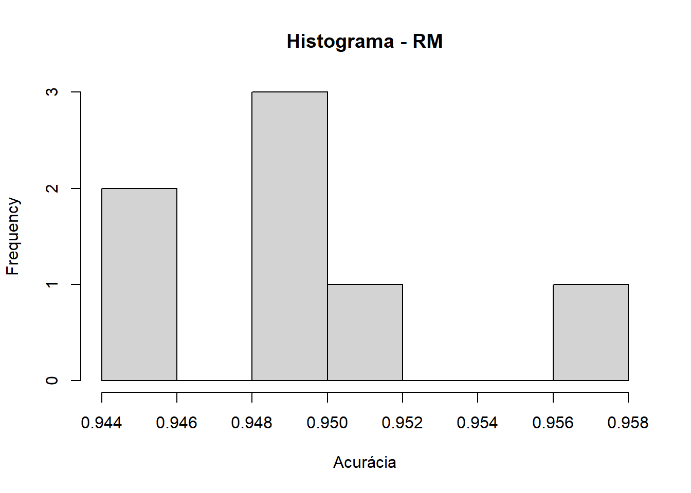
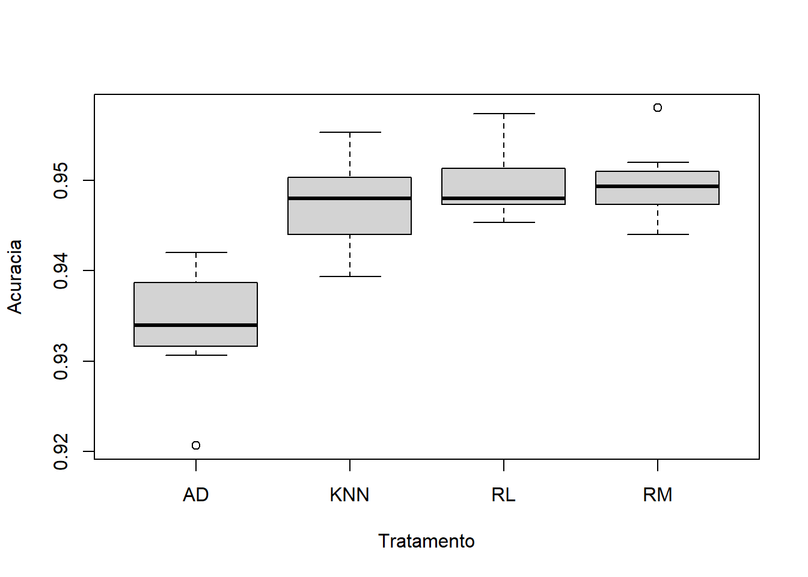
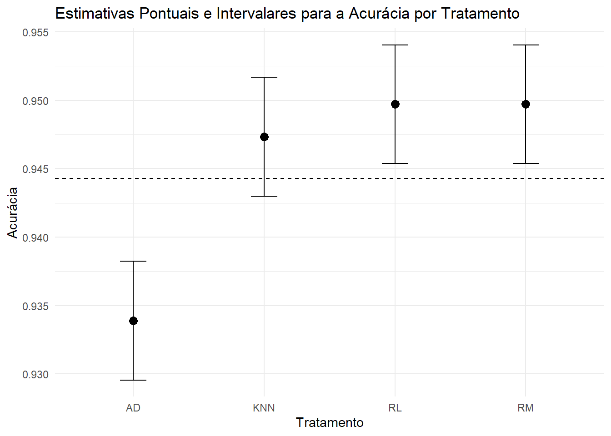
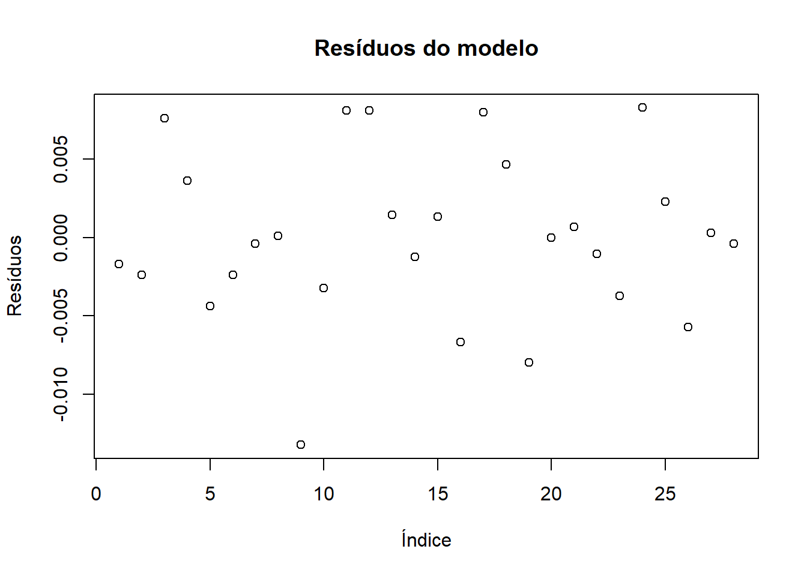

Estudo de precisão de Modelos de Machine Learning para classificiação
1 Introdução
Para o primeiro projeto integrador da matéria de Planejamento de Experimentos o experimento escolhido foi um estudo da eficiência de diferentes modelos de Machine Learning. O tema foi proposto considerando conceitos vistos em algumas matérias optativas, e o interesse em ver na prática quais modelos seriam mais eficientes.
2 Experimento
2.1 Hipóteses
- H0: Todos os modelos são igualmente eficientes.
- H1: Pelo menos um modelo é mais eficiente que os outros.
2.2 Fatores e Níveis
Neste experimento serão testados quatro modelos de Machine Learning: Random Machines, Árvores de decisão, KNN e Regressão Logística
2.3 Unidade Experimental
As Unidades Experimentais utilizadas foram 10 simulações de duas distribuições normais bivariadas com 2500 elementos cada, sendo \(C_1 = \left(\begin{array}{c}X_1\\Y_1 \end{array}\right) \sim N \left[\left(\begin{array}{c}60\\ 50 \end{array}\right), \left(\begin{array}{cc}25 & 0 \\ 0 & 25 \end{array}\right)\right]\) e \(C_2 = \left(\begin{array}{c}X_2\\Y_2 \end{array}\right) \sim N \left[\left(\begin{array}{c}45\\ 60 \end{array}\right), \left(\begin{array}{cc}36 & 0 \\ 0 & 36 \end{array}\right)\right]\) resultando em amostras de 5000 elementos. Para cada simulação foram usadas as seguintes seeds: 28062005, 16071998, 11052006, 14072001, 123, 321, 123456.
2.4 Variável Resposta
As variáveis resposta serão a precisão dos modelos, ou seja, a proporção de classificações corretas em relação ao total de classificações feitas.
2.5 Materiais e Instrumentos
Este experimento foi realizado primariamente utilizando a linguagem de programação R, com as bibliotecas: mvtnorm, tidyverse, caret, rpart, caTools e class. Além disso, foi utilizado o Github, para a colaboração entre os membros do grupo.
2.6 Casualização
Foram escolhidas 7 seeds para a geração dos dados, e cada seed foi usada para gerar um conjunto de dados diferente. Dada a natureza computacional do experimento, a aplicação de diferentes fatores em uma replicação tornou-se possível, então para cada modelo, foram usadas os mesmos 7 conjuntos de dados, reduzindo assim a variação latente.
2.7 Metodologia de Execução
Inicialmente foram gerados os dados a partir das distribuições normais bivariadas, por seguinte, foram aplicadas cada um dos modelos de Machine Learning para cada amostra gerada, e analisada a precisão de cada modelo para cada amostra. Por fim, foi feita a análise de variância para verificar se as diferenças entre os modelos são significativas.
2.8 Dados Coletados
Devido ao grande número de dados coletados, exibimos os dados a partir de sua análise exploratória.
- Acurácias dos modelos para cada réplica
Réplica
Modelo 28062005 16071998 11052006 14072001 123 321 123456
RL 0.9480000 0.9473333 0.9573333 0.9533333 0.9453333 0.9473333 0.9493333
AD 0.9340000 0.9206667 0.9306667 0.9420000 0.9420000 0.9353333 0.9326667
KNN 0.9486667 0.9406667 0.9553333 0.9520000 0.9393333 0.9473333 0.9480000
RM 0.9486667 0.9460000 0.9580000 0.9520000 0.9440000 0.9500000 0.9493333- Histograma das acurácias de cada modelo




- Boxplot das acurácias

O boxplot revela um indício de que o modelo de Árvores de Decisões possui uma precisão abaixo dos demais modelos, enquanto estes aparentam precisões bem similares, mas com diferenças entre suas variações.
3 ANOVA
Df Sum Sq Mean Sq F value Pr(>F)
Tratamento 3 0.0012102 0.0004034 13.03 2.99e-05 ***
Residuals 24 0.0007432 0.0000310
---
Signif. codes: 0 '***' 0.001 '**' 0.01 '*' 0.05 '.' 0.1 ' ' 13.1 Estimação dos parâmetros

3.2 Teste de Tukey
Tukey multiple comparisons of means
95% family-wise confidence level
Fit: aov(formula = Acuracia ~ Tratamento, data = DIC)
$Tratamento
diff lwr upr p adj
KNN-AD 1.342857e-02 0.005222894 0.021634249 0.0007724
RL-AD 1.580952e-02 0.007603846 0.024015201 0.0001044
RM-AD 1.580952e-02 0.007603846 0.024015201 0.0001044
RL-KNN 2.380952e-03 -0.005824725 0.010586630 0.8535179
RM-KNN 2.380952e-03 -0.005824725 0.010586630 0.8535179
RM-RL -1.110223e-16 -0.008205678 0.008205678 1.0000000 Acuracia groups
RL 0.9497143 a
RM 0.9497143 a
KNN 0.9473333 a
AD 0.9339048 b4 Checagem de adequação do modelo
4.1 Suposição de normalidade
normal_JB_teste <- DIC %>% pivot_wider(names_from = Tratamento, values_from = Acuracia) %>%
select(-UE) %>% as.matrix %>%
apply(2, function(x) {return(jarque.bera.test(x))})
if(sum(unlist(lapply(normal_JB_teste, function(x) if(x$p.value <= 0.05){TRUE}else{FALSE}))) == 0) {
print("Todos os tratamentos seguem a normalidade.")
} else {
print("Algum tratamento não segue a normalidade.")
}[1] "Todos os tratamentos seguem a normalidade."4.2 Verificação de independência

O gráfico revela que não há dependência entre os resíduos
4.3 Teste de homogeneidade de variâncias (Teste de Bartlet)
##### ============================ 6.2.2.2 Homogeneidaade de Variâncias ========
bartlett_teste <- bartlett.test(Acuracia ~ Tratamento, data = DIC)
bartlett_teste
Bartlett test of homogeneity of variances
data: Acuracia by Tratamento
Bartlett's K-squared = 2.2226, df = 3, p-value = 0.5275if(bartlett_teste$p.value > 0.05) {
print("As variâncias são homogêneas.")
} else {
print("As variâncias não são homogêneas.")
}[1] "As variâncias são homogêneas."5 Conclusão
O teste da ANOVA revela que de fato há evidências de que pelo menos um dos modelos possui variância divergente dos outros modelos.
Como não havia nenhuma suposição prévia sobre os modelos, realizamos em seguida o teste de Tukey que separou os quatro modelos em dois grupos de variações, Grupo A para Regressão Logística, Random Machines e KNN, e grupo B para Árvore de Decisão, o que está de acordo com o que vimos na análise exploratória inicial.
Dessa forma, concluímos que o modelo de Árvore de Decisão é o menos eficiente para predição de dados do que os outros três modelos do estudo e que estes não possuem diferença significativa.